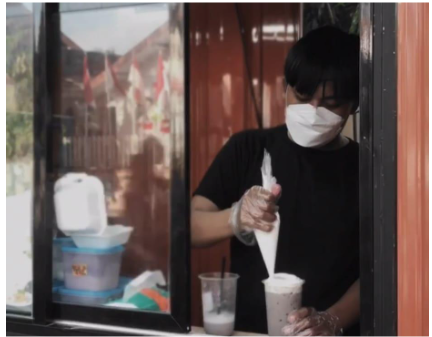

Wirausaha Kuliner
Agus Suyatno, S.Kom
SMAN 1 Muncar
Ridho, Alumni Double Track yang Mengubah Pisang Menjadi Peluang Emas
Berbekal semangat pantang menyerah, Mohammad Ridho As'ari berhasil membangun Kedai Mr-A di Muncar. Menghadirkan olahan Pisang Aroma, Pisang Gendut, hingga Pisang Susu Keju (PSK) dengan omzet mencapai jutaan rupiah per bulan.